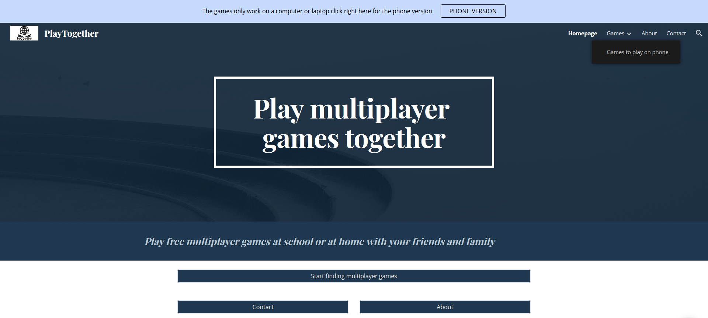

Over mijzelf
Hallo, welkom bij mijn portfolio. Ik ben Berke en ben 16 jaar oud. Ik zit
op het ROC Mondriaan en volg de opleiding Software developer.
Bij de Jumbo (helemaal rechts) heb ik een bijbaantje als vakkenvuller.
Door corona kon ik niet meer naar school gaan voor een tijdje en toen
kwam ik op het idee om mijn eigen website te maken.
De website hoort
te dienen als een zoekmachine om spelletjes te kunnen vinden zodat
je samen online kan spelen (zie hieronder de homepage van mijn website)


Mijn eerste keuze voor een opleiding was psychologie. Die opleiding leek mij het leukst maar toen las ik over elektro techniek en dat leek mij ook leuk omdat ik er al beetje verstand van heb maar na lang denken kwam ik uit bij Software Developer omdat dat mij toch het leukst leek. Ik heb er ook voor gekozen omdat ik dit heel graag wilde leren. Zodra ik mijn opleiding heb afgerond wil ik ook een HBO opleiding volgen. Na het afronden van mijn opleiding wil ik beginnen met werken. Het liefst wil ik websites bouwen of designen. Waarom ik websites leuk vindt om te designen/bouwen is omdat ik dan creatief bezig kan zijn.